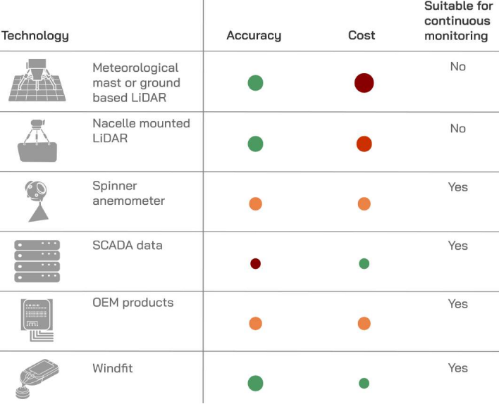

Sereema
"Notre mission est d'accélérer la transition énergétique à travers une révolution dans la gestion des actifs éoliens."
I. L'histoire de l'entrprise
2013: Idée de concept
Fournir aux propriétaires et exploitants de parcs éoliens des outils IoT de pointe pour surveiller à distance et optimiser numériquement leurs éoliennes.
2016: 2015: Sereema est fondée
La preuve de concept fonctionne sur place. Les premiers résultats de Windfit sont disponibles.
2016: Première levée de fonds
Grâce à une première levée de fonds de pré-amorçage avec IT Translation, le lancement commercial de Windfit est réussi.
2017: Windfit 01
Après un an, Windfit opère à la fois onshore et offshore, fournissant une optimisation numérique automatisée pour des clients dans 4 pays européens.
2019: Windfit 02
Présent dans 12 pays avec plus de 500 éoliennes et plus de 1 GW surveillé. Vainqueur du CleanTech Open France.
II. Modèles économiques
L’abonnement. Sereema vend un paquet d’outils d'optimisation des turbines éoliennes. Ce paquet inclut des Sensor Box (boîte de capteur) prêts à installer sur des turbines et un abonnement de (3; 6 mois ou 1 année) de logiciel pour gérer des Sensor Box. Le prix est basé sur le nombre de turbines et la durée de l’abonnement.
III. Chaines de valeaur
| Fournisseurs | Conception | Production | Distribution et installation |
| Achats de matières premières en vue de la conception et la production | Suite aux recherches, ils concoivent le Sensor Box et le logiciel de WindfitSuite aux recherches, ils concoivent le Sensor Box et le logiciel de Windfit | Les Sensor Box sont produits suite aux commandes, zéro stock. Et le logiciel est optimisé pour s’adapter à l’échelle de chaque projet | Les matériels sont envoyés aux clients pour installation. Les analyses sont réalisées sur les serveurs de Windfit |
IV. Environnement concurrentiel
A. Forces
1. Technologie
Dans le domaine d'optimisation des parcs éoliens, il y a des dizaines compagnies offrant des solutions soit logicielles soit matérielles intégrées avec beaucoup de technologies comme LiDAR (La télédétection par laser), iSpin - spinner anémomètre (anémomètre rotatif), SCADA (Système de contrôle et d'acquisition de données). Dans ce contexte, la jeune start-up Sereema présente avec confiance leur technologie Windfir avec de nombreux avantages exceptionnels.
- Optimisation pour chaque turbine
- Résultats exploitables
- Données indépendantes
- Technologie conviviale
2. Autres
- Un grand nombre de partenaires
- Supports de l’Etat
B. Faiblesses
- Les propriétaires des grands parcs éoliens préfèrent des solutions qui ont prouvé l' efficacité qu’une nouvelle technologie qui n’est pas.
- Le coût pour remplacer les bases de données et appareils de dernière fournisseurs peut être plus grand que les bénéfices de Windfit si la différence n’est pas vraiment considérable.
- Les grandes entreprises peuvent offrir des plans au meilleur prix grâce à leurs ressources.
Enjeux politique, economics, social, technologie, environnement, légal
1. Politique
Le développement, le succès d'une start-up donne la motivation aux autres start-ups. Globalement, cette démarche facilite les politiques de l’Etat de remplacer des ressources fossiles par des ressources renouvelables. De plus, cela permet à l'Etat d’atteindre des objectifs des accords sur le climat, par exemple l’Accord de Paris.
2. Economics
La solution Windfit donne l’optimisation pour des parcs éoliens qui mènent aux plus grands bénéfices et aux plus grands intérêts. Cela rend cette industrie plus rentable, efficace et possible dans le futur.
3. Social
Augmenter l’efficacité de l’énergie éolienne prouve la possibilité d’un futur sans carbone qui nous encourage à agir pour notre environnement et inspire les autres green start-up.
4. Technologie
Grâce à notre technologie intégrée unique, nous produisons une surveillance et une analyse des données clés perspicaces en tant que fournisseur de données indépendantes.
5. Environnement
Maximiser l’efficacité des parcs éoliens qui jouent un rôle important dans le futur d’énergie renouvelable. Plus nous exploitons d'énergie des parcs éoliens, moins nous dépendons des énergies fossiles.
6. Légal
Des start-up comme Sereema indiquent la nécessité d’avoir un cadre juridique pour faciliter leur développement et les protéger de la pression des entreprises énormes exploitant les combustibles fossiles.